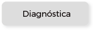
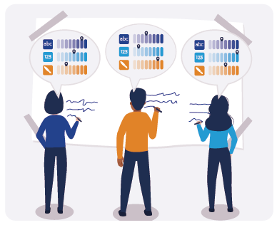
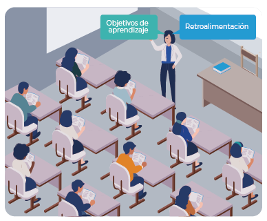
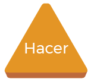
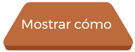
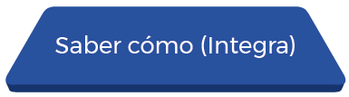

- Pruebas orales o escritas de respuesta múltiple
- Pruebas de respuesta corta
- Pruebas de respuesta simple y unívoca
- Pruebas de identificación de componentes a través de figuras
- Pruebas de ordenamiento o jerarquización
- Pruebas de asociación de hechos
- Pruebas de complementación de frases
Observe el siguiente video, el cual brinda una mirada crítica respecto al estado de la educación en la actualidad:
El gran juicio a la educación actual... Algo está mal
https://youtu.be/WH28sJmZ5Xs
https://youtu.be/WH28sJmZ5Xs
Para comenzar, ubique en cada uno de los siguientes enunciados el tipo de evaluación que corresponda.
Tipo de evaluación:
Evaluación de la docencia
Evaluación de planes y programas
Evaluación diagnóstica
Evaluación del aprendizaje
Evaluación de instituciones
La evaluación puede clasificarse, según los actores que participan en ella, como autoevaluación, coevaluación y heteroevaluación. Sin embargo, la evaluación es un proceso único que, a partir del momento o necesidad de aplicación, adopta diferentes funciones como:


La evaluación diagnóstica
También llamada de evaluación de saberes o conocimientos previos o de indagación de las concepciones alternativas de los estudiantes, es una de las actividades de evaluación inicial que se sugiere cuando se trabaja desde un paradigma educativo constructivista. En este sentido, esta indagación debe servir más como punto de partida que como elemento de calificación (o descalificación) de lo que saben los estudiantes pero, a la vez, sirve de información para la planeación que debe realizar el docente.
Hay diferentes opciones para indagar estos saberes: cuestionarios abiertos, cerrados, entrevistas con ejemplos, uso de casos y el formulario KPSI (Knowledge and Prior Study Inventory).
Entre sus características sobresalen:
- Puede implementarse en diferentes momentos de la secuencia de enseñanza-aprendizaje, por ejemplo, al inicio y al final del nivel.
- Se diseña teniendo en cuenta los objetivos para la enseñanza.
- Minimizan el miedo que produce el enfrentarse a un pretest.
Para su diseño se tiene en cuenta:
- En el lado izquierdo se ubican los enunciados que pueden corresponder a asuntos conceptuales, procedimentales y actitudinales de acuerdo con los objetivos.
- Se presenta una escala para que la persona señale con una “X” la casilla que más refleja lo que está pensando en ese momento.
- Se puede dejar la casilla de observaciones al lado derecho o en la parte de abajo, para que la persona pueda ampliar la información.
- Hay diferentes escalas que se pueden adaptar.
Por ejemplo:
- Se lo podría explicar a otro compañero
- Creo que lo sé
- No lo entiendo
- No lo sé
- No estoy seguro
- Lo estoy un poco
- Lo estoy bastante
- Lo estoy totalmente
- No lo sé
- Lo sé un poco
- Lo sé bien
- Lo sé bastante bien
- Lo puedo explicar a un amigo/a o compañero/a
La evaluación formativa
Es la que orienta el proceso de enseñanza-aprendizaje, ya que busca regular, orientar y mejorar el proceso educativo con miras al logro de los objetivos de aprendizaje, a través del desarrollo de estrategias pedagógicas alternativas, de la atención a diferencias individuales y el ajuste de los tiempos, entre otros. Este tipo de evaluación complementa la evaluación sumativa para lograr una forma integral y holística de evaluar procesos de enseñanza-aprendizaje en el aula, y hace parte de las actividades realizadas en esta, ya que se implementa de manera articulada y paralela al desarrollo del curso.
Dentro de las técnicas para desarrollar la evaluación formativa y los instrumentos de esta se encuentran las categorías propuestas dentro de la pirámide de Miller, por lo que hacen parte de las estrategias didácticas. Tanto los aprendizajes específicos como los contenidos conceptuales son posible de evaluar con los instrumentos especificados en el primer y segundo nivel de la pirámide de Miller, y para evaluar las competencias actitudinales se pueden realizar análisis de dilemas morales, análisis de recursos observacionales narrativos y análisis del discurso.
Se debe tener presente que la retroalimentación del proceso de enseñanza-aprendizaje es fundamental para que los estudiantes alcancen los conocimientos esperados de acuerdo con sus diferentes ritmos de aprendizaje. Este proceso adquiere importancia siempre y cuando se conduzca efectivamente hacia los aprendizajes esperados y al logro de los objetivos, lo cual representa el compromiso profesional que el profesor ha adquirido con sus estudiantes.
La evaluación sumativa
Permite hacer un juicio de responsabilidades, certificación o selección; esta es la que se hace con miras a tener evidencias del aprendizaje y poder certificar. La evaluación basada en competencias recopila evidencias para demostrar que la persona ha logrado el resultado esperado.
Observe la siguiente figura en la que se muestran los tipos y métodos para recolectar la evidencia:

Tomado de: Ángeles Gutiérrez (2003)
Es importante tener presente que se requiere centrar más la evaluación en el análisis, discernimiento y autoevaluación, y menos en aspectos memorísticos. La evaluación debe superar las limitaciones de la heteroevaluación con la búsqueda de propuestas claras que lleven al logro de esta, lo cual significa la conquista de la autonomía, la autocrítica, la autocomprensión, la autodirección, la responsabilidad y el sentido ético (2).
Así mismo, hay que reconocer que la evaluación diagnóstica, formativa y sumativa operan en conjunto y, si se logra su equilibrio, pueden constituirse en la herramienta para conducir el acompañamiento docente de manera efectiva. Sin embargo, no se puede evitar que la evaluación siga cumpliendo con una función de certificación de los resultados finales del aprendizaje. En este sentido, ambos tipos de evaluación (formativa y sumativa) no son excluyentes, sino complementarias.
De esta manera, los métodos de evaluación deben permitir la valoración de una competencia de manera integral, buscando combinar el conocimiento, la comprensión, la solución de problemas, los niveles técnicos, las actitudes y los principios éticos.
Entre los métodos de evaluación integral que se pueden usar en programas académicos que se enfocan al logro de aprendizajes significativos, se encuentran:
- Diálogo en forma de interrogatorio
- Métodos de toma de decisiones
- Proyectos y asignación de tareas
- Técnicas de debate y moderación
- Dinámica de grupos
- Círculos de calidad
- Mapas conceptuales y redes semánticas
- Experimentos tecnológicos
- Métodos de creatividad
- Estudios de caso
- Juegos de roles y dramatización
- Entrevistas
- Observación
- Métodos de simulación
- ECOE y ABP
- Práctica profesional real, la cual puede ser evaluada a través de una situación o contexto real como:
- Mini-CEX (Mini Clinical Evaluation Exercise)
- Observación Estructurada de la Práctica Clínica (OEPC)
- Portafolio
Como se puede apreciar, dichas técnicas e instrumentos constituyen fundamentalmente los propuestos en los niveles superiores de la pirámide de Miller:
Pirámide de Miller


Se pretende que el estudiante sea capaz de explicar el concepto en cada uno de sus componentes y emplearlo en la solución de nuevos problemas. Algunas de las posibilidades evaluativas del manejo conceptual son:
- Observación indirecta con pruebas escritas
- Casos clínicos o con entrevistas
- Pruebas de libro abierto
- Disertaciones orales
- Ensayos
- Mapas conceptuales
- Redes semánticas

- Evaluación del desempeño con el paciente real o simulado
- Experimentos tecnológicos
- Métodos de creatividad
- Estudios de caso
- Juegos de roles y dramatización
- Entrevistas
- Observación
- Métodos de simulación
- ECOE y ABP

La práctica profesional real puede ser evaluada a través de una situación o contexto real como los siguientes:
- Mini-CEX (Mini Clinical Evaluation Exercise)
- Observación Estructurada de la Práctica Clínica (OEPC)
- Portafolio
- Feedback 360º
- Videograbaciones
Si desea profundizar en algunas estrategias evaluativas que se llevar a cabo en el área de la salud, se recomienda estudiar la siguiente bibliografía:
Mini-CEX
1. Fornells Vallés JM. El ABC del Mini-CEX. Educ. méd. 2009;12(2):83-89. Disponible en http://scielo.isciii.es/scielo.php?script=sci_arttext&pid=S1575-18132009000300004&lng=es
El portafolio
2. Rey Sánchez E, Escalera Gámiz AM. El portafolio digital un nuevo instrumento de evaluación. DIM: Didáctica, Innovación y Multimedia. 2011;21:1-10. Disponible en https://www.raco.cat/index.php/DIM/article/view/247586/331525
Feedback 360º
3. Fornells JM, Juli X, Arnau J, Martínez Carretero JM. Feedback en educación médica. Educación Médica. 2008;11(1):7-12. Disponible en http://scielo.isciii.es/scielo.php?script=sci_arttext&pid=S1575-18132008000100003&lng=es&tlng=es
Bitácora
4. Santos JI, Galán JM, Martínez R. Nuevas estrategias de enseñanza: experiencia con Weblogs. IX Congreso de Ingeniería de Organización Gijón, 8 y 9 de septiembre de 2005. Disponible en http://files.estrategias2010.webnode.es/200000037-8eb988fb39/120.pdf
Diario de campo
5. Yepes TA, Puerta AM, Morales RM. Una mediación pedagógica en educación superior en salud. El diario de campo. Revista iberoamericana de educación. 2008;47(4):1-0. Disponible en https://rieoei.org/RIE/article/view/2301
Elaboración de preguntas
6. National Board of Medical Examiners (NBME). Cómo elaborar preguntas para evaluaciones escritas en el área de ciencias básicas y clínicas. 2006. Disponible en https://www.nbme.org/pdf/iwg-sp/iwg-spanish2006.pdf
Glosarios Wikis
7. Martín Valero R, Casuso Holgado MJ, Moral Muñoz JA, Poblete Flor JA, Fernández Martín M. Quien quiere la wiki como herramienta docente en Osteopatía [en línea]. Disponible en http://www.enriquesanchezrivas.es/congresotic/archivos/Universidad/Martin_Otros.pdf
Elaboración de rúbricas
8. Gatica Lara F, Uribarren-Berrueta TD. ¿Cómo elaborar una rúbrica?. Investigación en educación médica. 2013;2(5):61-5. Disponible en http://www.scielo.org.mx/scielo.php?pid=S2007-50572013000100010&script=sci_abstract
9. Rúbricas para evaluación en Ciencias de la Salud [en línea]. Disponible en https://enfermeriacomunitaria.org/web/attachments/article/1694/Rubricas%20para%20evaluacion%20en%20Ciencias%20de%20la%20Salud.pdf